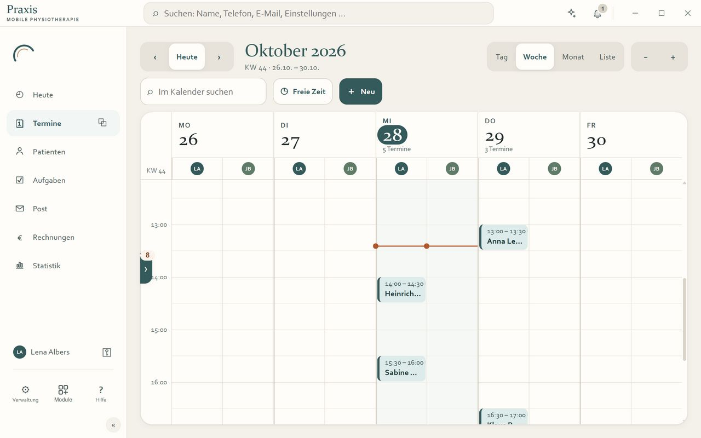
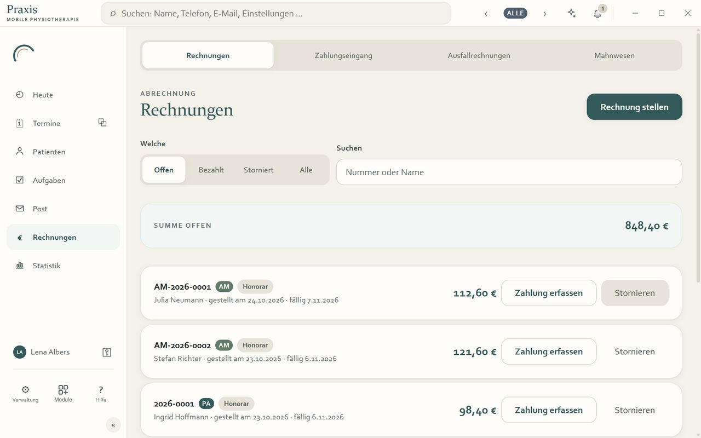
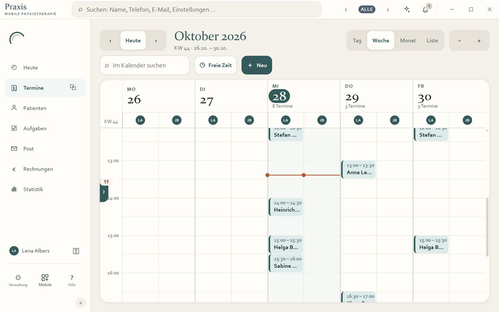
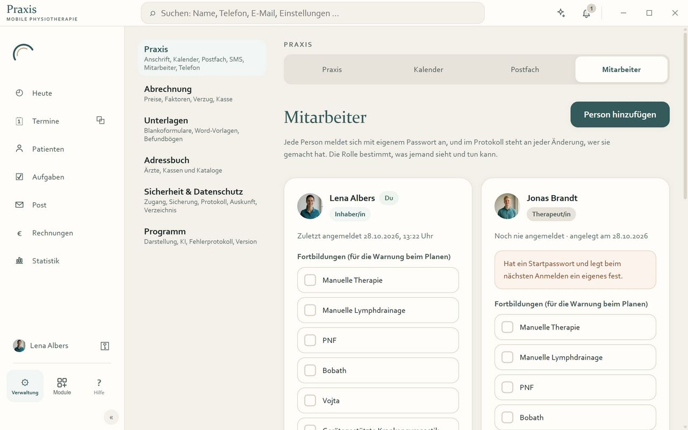
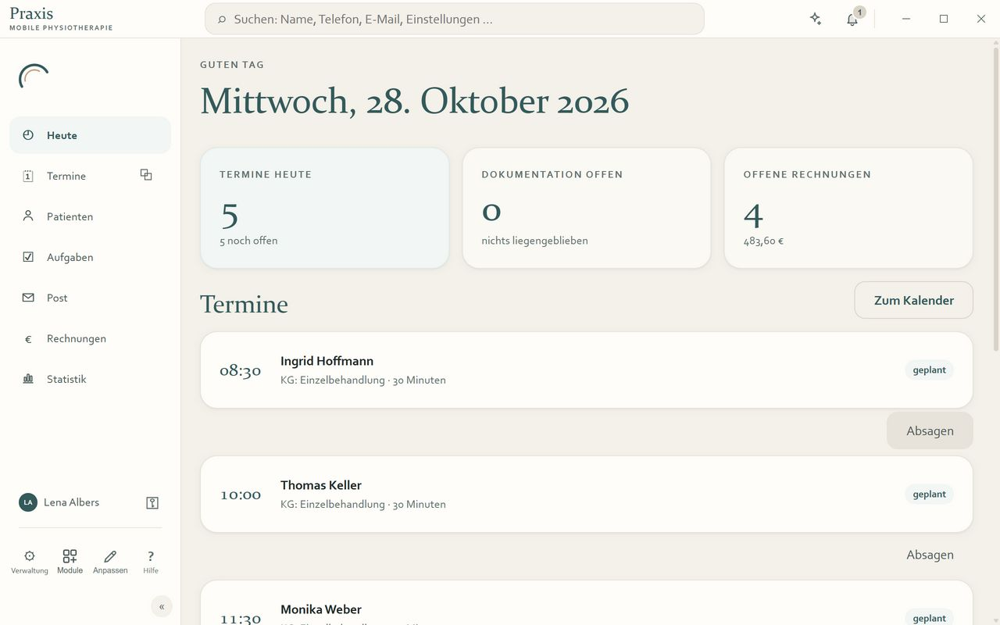

Kalender fürs ganze Team
Jede Person in ihrer Spalte, Räume und Geräte mit Kapazität, freie Zeiten auf Knopfdruck – mit der Fahrzeit zwischen zwei Hausbesuchen gleich mitgerechnet.
Praxissoftware für Physiotherapie
Termine, Tour, Akte, Rechnungen und Kassenabrechnung – gebaut für das Tablet in der Hand, nicht für den Schreibtisch. Und Ihre Akten bleiben in Ihrer Praxis, nicht in einer Cloud.
Ein Tag mit Mobile Praxis
Alle Besuche in der richtigen Reihenfolge, die Fahrt dazwischen und wann Sie losfahren müssen. Termine in der Praxis stehen dazwischen – ganz ohne Fahrt.
Verordnung, Serien, Befunde, Ziele, Rechnungen – auf einen Blick. Verträge unterschreibt die Patientin mit dem Stift direkt im Dokument, Kästchen zum Antippen.
Der Begleiter beantwortet Fragen zum Tag, entwirft die Dokumentation aus Ihrem Diktat und plant mit – Sie entscheiden. Die KI rechnet auf Ihrem Gerät, kein Wort geht ins Netz.
Erbrachte Einheiten werden zum Behandlungsnachweis, Zuzahlung und Kassenanteil rechnet das Programm. Am Monatsende liegt das Paket für Ihr Abrechnungszentrum bereit.
Aus der Tour werden die Fahrten des Tages, mit Postleitzahl und Ort statt Namen. Sie bestätigen nur. Was noch offen ist, sagt Ihnen der Feierabend-Check.
Funktionen
Was Sie nicht brauchen, schalten Sie als Modul aus – dann ist davon auch nichts zu sehen.

Jede Person in ihrer Spalte, Räume und Geräte mit Kapazität, freie Zeiten auf Knopfdruck – mit der Fahrzeit zwischen zwei Hausbesuchen gleich mitgerechnet.
Am Vortag, automatisch, Server in Deutschland. Ohne Namen und ohne Leistung im Text – wird abgesagt, verschwindet die Erinnerung von selbst.

Faktoren, Hausbesuch und Kilometer, Ausfallhonorar, Mahnstufen, GiroCode zum Scannen. Den Kontoauszug lesen Sie ein, Zahlungen ordnen sich zu.

Jede Änderung wird zur neuen Fassung, nichts wird überschrieben – so, wie es § 630f BGB verlangt. Bild- und Videobefund liegen verschlüsselt in der Akte.
Ein Kalender, zwei Orte, ein Rechnungskreis je Betriebsstätte. Auch als Praxisgemeinschaft, in der jede Praxis nur ihre eigenen Akten sieht.

Inhaberin, Therapeutin, Büro. Das Büro rechnet ab, sieht aber nie eine Dokumentation – die Schweigepflicht steckt im Programm, nicht in einer Dienstanweisung.

Drei Arbeitsweisen
Große Flächen für Stift und Finger, Hoch- und Querformat.

Sicherheit
Keine Cloud, keine Telemetrie, kein fremder Server, der mitliest. Jeder Weg ins Netz ist einzeln benannt und durch Prüfungen festgehalten.
Die ganze Datenbank ist verschlüsselt, Sicherungen auch. Fotos und Videos aus dem Befund liegen einzeln verschlüsselt.
Diktat, Suche und der Begleiter laufen auf Ihrem Rechner – ohne Netzverbindung. Fragt er doch einmal im Netz nach, dann nur ohne jeden Personenbezug.
Dokumentation, Befunde und das Protokoll sind unveränderlich. Wer was wann geändert hat, bleibt nachvollziehbar.
Jede neue Fassung ist digital unterschrieben. Was nicht passt, wird nicht eingespielt – und nie mitten am Arbeitstag.
Ausprobieren
kostenlos
Das ganze Programm mit einer erfundenen Musterpraxis. Jedes Dokument trägt „Demo“ – zum Ansehen, nicht zum Arbeiten.
Demo laden30 Tage frei
Mit Ihren echten Patientinnen, allen Funktionen und ohne Wasserzeichen. Ohne Zahlungsdaten, ohne Kündigung.
Testzugang anfordernmonatlich oder jährlich
Mit allen Updates, neuen Kassenpreisen und Katalogen. Läuft die Lizenz aus, bleibt alles lesbar und exportierbar – niemand wird ausgesperrt.
Angebot anfordernDemo
Installieren, öffnen, mit einem Tipp anmelden – die Musterpraxis ist schon eingerichtet: Patientinnen, Termine, Rechnungen, ein ganzes Team. Mit „Neue Musterpraxis“ fangen Sie jederzeit frisch an.
Fragen
Nein. Das Programm arbeitet vollständig auf Ihrem Gerät. Internet brauchen nur Dinge, die ohne gar nicht gehen: SMS-Erinnerungen, E-Mail, Updates und Kataloge.
Auf Ihrem Rechner, verschlüsselt. Arbeiten mehrere Geräte zusammen, ist ein Rechner Ihrer Praxis der Server – kein Rechenzentrum eines Dritten.
Ja. Das Programm führt die Behandlungsnachweise, rechnet Vertragspreis und Zuzahlung und legt das Abrechnungspaket für Ihr Abrechnungszentrum ab. Dafür brauchen Sie wie bisher Zulassung und Institutionskennzeichen.
Die Anbindung ist in Vorbereitung: Gesundheitskarte, KIM und elektronische Patientenakte sind gebaut und werden vor der Freigabe gegen echte Anlagen geprüft. Pflicht ist der Anschluss ab dem 1. Oktober 2027.
Die Vollversion gibt es für Windows, macOS und Linux. Die Demo steht vorerst für Windows bereit.
Nichts geht verloren. Sie können weiter lesen, sichern, exportieren und Auskunft geben – nur Neues anlegen geht erst wieder mit einer Lizenz. Akten unterliegen Aufbewahrungsfristen; aussperren gibt es bei uns nicht.
Nein, und das ist Absicht. Sie formuliert um, findet wieder und fasst zusammen – sie stellt keine Diagnose und bewertet nichts. Was in die Akte kommt, bestätigen Sie.